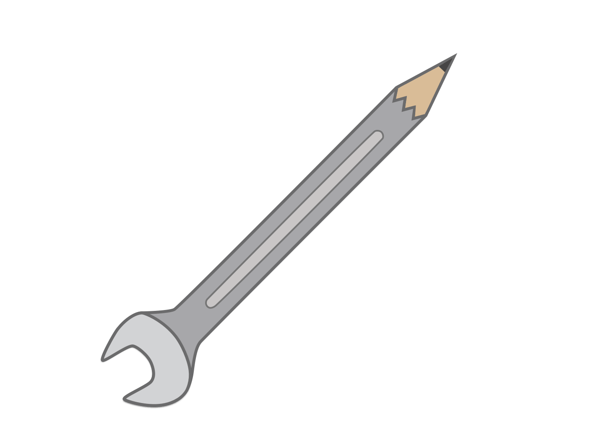

Hey!
I'm Oliver Gage!
If i could describe myself in a sentence i would say that im a passionate person with a HUGE interest in Design and Classic Cars!
I use the same principles for working on a car as i do with design!
1. Be Passionate
2. Be Patient
3. Last but not least, BE DIFFERENT.
